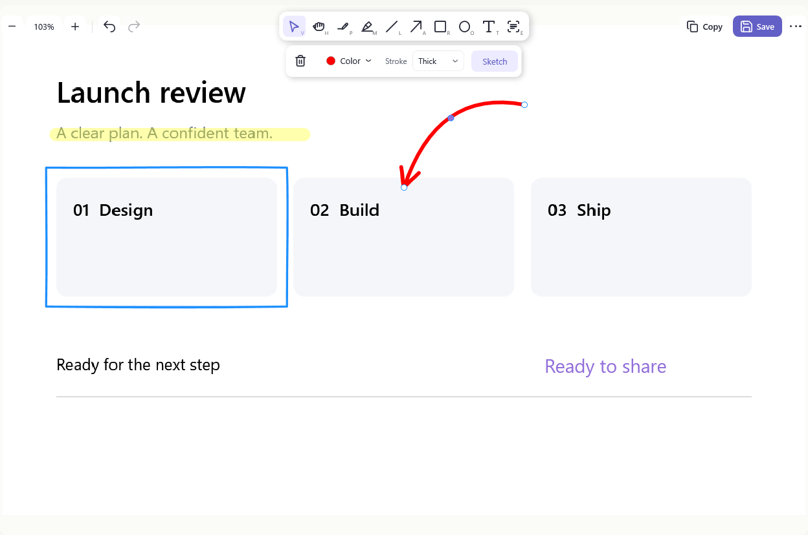
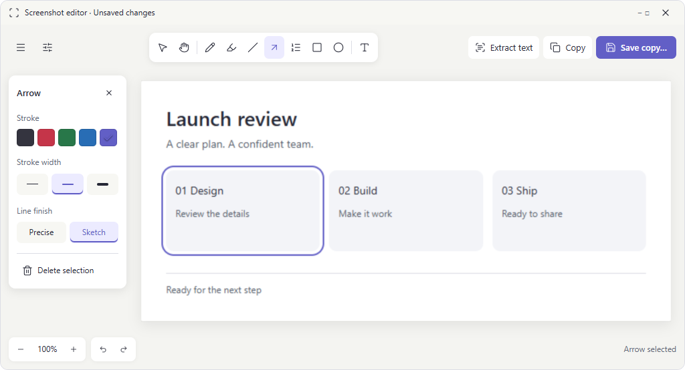
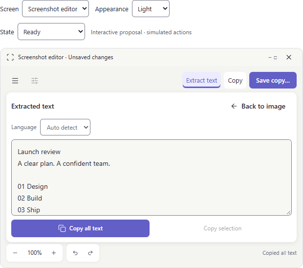
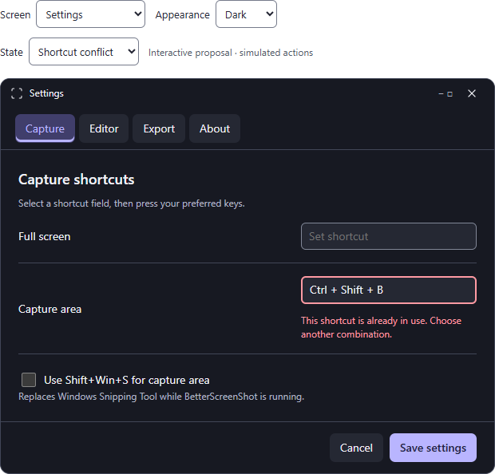
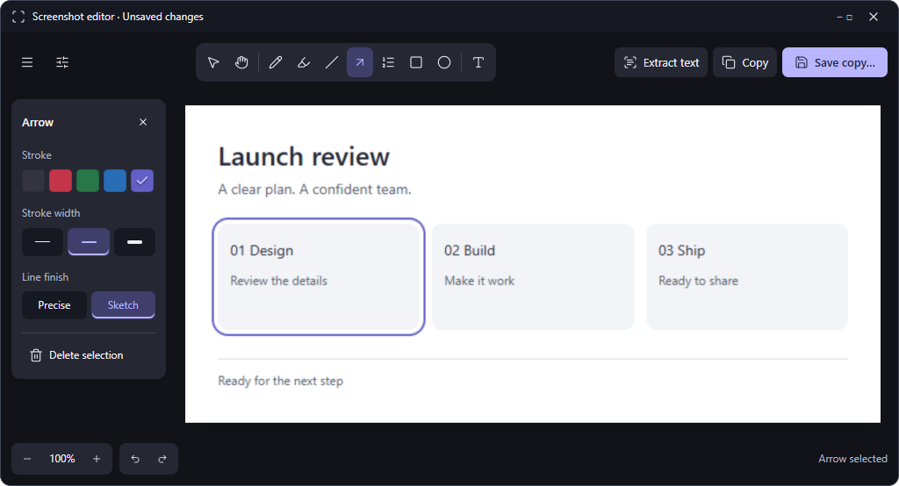
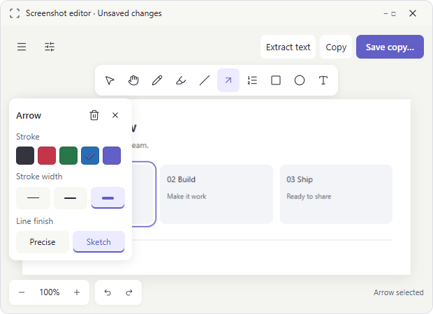
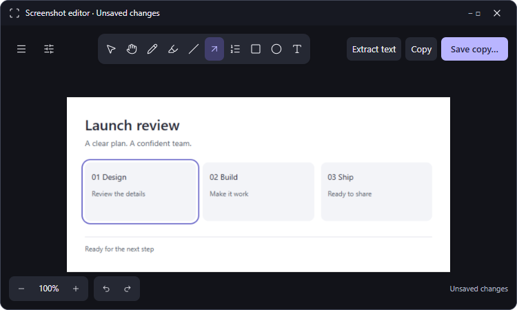

A clearer path from capture to copy.
BetterScreenShot already has a coherent visual style. The largest gains come from preventing lost work, making commands easier to recognize, and improving compact layouts and keyboard feedback.
The earlier proposal scored 98.05/100 on the rubric below. User review then identified excessive space occupied by three stacked rows; that assessment was too optimistic about density. The current floating-controls revision supersedes that layout. Its checks are documented below; it has not received a new usability score. This is a provisional design assessment, not a measured usability result or a rating of the shipped app. The production application was not changed.
Explore the interactive proposalPrinciples used in the review
Modern interface design is most useful here when it reduces uncertainty. A screenshot utility should help someone capture, mark, and share an image without having to study the controls. Decorative headings, large tiles, and a new visual identity would add little.
- Make the next action recognizable. Use verbs, stable labels, and a small number of emphasis levels. Show common actions as text plus an icon. Keep specialist drawing tools compact.
- Place controls beside the work they affect. Group image export commands together, tool properties with the selected tool, and recognition controls with extracted text.
- Show outcomes and preserve control. Copy needs confirmation. Saving should not require another OK click. Unsaved edits and recordings need a safe exit and a clear recovery path.
- Use progressive disclosure without hiding essential tasks. Keep optional language and drawing settings quiet, but show text extraction and error recovery directly.
These choices apply Nielsen Norman Group's usability heuristics and Microsoft's Windows button guidance. They are adapted to a compact desktop editor, rather than applying web navigation conventions mechanically.
Accessibility is part of the layout: normal text should reach 4.5:1 contrast, meaningful control boundaries and focus cues should reach 3:1, and keyboard focus must remain visible and predictable. A 24-pixel target is a useful minimum reference, with larger targets for touch. For this desktop app, use 36-DIP controls where practical and a 44-DIP touch mode.
Reference: WCAG 2.2 quick reference. These are design benchmarks for this WPF application, not a claim of web conformance. The Web Interface Guidelines supplied a secondary checklist for focus, names, status messages, and overflow. Native WPF automation peers and Windows system colors are the implementation equivalents.
Findings and proposed fixes
Each score rates the affected experience as it is today. Higher is better. These issue scores are not averaged into the overall score because the list intentionally concentrates on defects. P1 means address before release, P2 means the next improvement cycle, and P3 means polish.
| Issue | Current | Evidence and consequence | Proposal and acceptance condition |
|---|---|---|---|
| P1 · 01 Closing unsaved edits | 40 | ScreenshotViewerWindow.xaml.cs:313,325Source and sample editorClosing disposes the temporary image without checking whether annotation changes were saved. | Track the last saved document version. Guard X and Alt+F4 with Save copy, Discard changes, and Keep editing. Cancelled or failed saving must leave the editor open. Copying must not mark the document saved. |
| P1 · 02 Preview replacement loses a capture | 40 | ScreenshotToastWindow.xaml.cs:53,115,134SourceA new toast closes the previous toast and disposes its temporary capture. | Keep previous unsaved previews in a session-only pending list. Show Previous / Next with a count when needed. Explicit discard removes only the selected capture. On exit, offer to save or discard remaining captures. No new persistent history is required. |
| P1 · 03 Recording Cancel is destructive | 50 | AreaRecordingWindow.xaml.cs:57,162Source and recording fixtureCancel closes the toolbar and cancels recording; completed temporary output can be deleted. | Before recording, use Cancel. While recording, use Stop and keep plus Discard…. Confirm Discard with a safe default. Keep Stop in the same position as the chosen start button. |
| P1 · 04 Primary-button focus disappears | 45 | CaptureShortcutsWindow.xaml:136ScreenshotToastWindow.xaml:47SourceThe focus border uses the same accent as the filled button. The interior boundary has 1:1 contrast. | Use an external 2-DIP focus ring with a 2-DIP gap. Verify every primary and secondary action in both themes and Windows contrast themes. Focus must not alter layout. |
| P2 · 05 Copy has no success confirmation | 60 | ScreenshotViewerWindow.xaml.cs:225SourceCopying… returns directly to Copy. Replacing button Content also removes its original icon layout. | Keep button geometry and content stable. Report Copied image in a persistent live status area. Keep image editing available. On failure, preserve the image and offer Retry. |
| P2 · 06 Save changes label and interrupts | 65 | ScreenshotViewerWindow.xaml.cs:260,290AppDialog.xaml.cs:79SourceSave becomes Save As… after use, and success opens a modal OK dialog. | Use Save copy… consistently. Keep the existing file picker and overwrite protection. Show Saved copy with Open folder in a nonmodal status area. Put full paths in selectable details. |
| P2 · 07 Text extraction is hard to discover | 60 | ScreenshotViewerWindow.xaml:307Live editor and sourceExtract text appears as one more drawing icon. The style guide explicitly calls for a named command. | Keep a named Extract text button in the upper-right action group. Keep E and Ctrl+Shift+T. Label the text-copy command separately from image Copy. |
| P2 · 08 Controls cover the image | 68 | ScreenshotViewerWindow.xaml:299ScreenshotViewerWindow.Editor.cs:324Live editor, generated width fixturesThe tool dock and options float over image coordinates. A narrow window needs multiple overlapping control levels. | Use a compact floating tool dock at the top and a contextual properties card on the left. Fit the image beside the visible card at wide sizes. At 760 DIP and below, collapse properties behind a button; the temporary popover may cover part of the image and must be easy to dismiss. Hide properties for Select and Pan. |
| P1 · 09 Fixed-width text drawer | 55 | ScreenshotViewerWindow.TextExtraction.cs:220ScreenshotViewerWindow.xaml:367Source and 620-pixel fixtureThe text drawer always reserves 312 DIP. At minimum width, the image receives roughly half the remaining space. | At 760 DIP and below, show a text workspace with a named Back to image command. Hide annotation controls there. At larger widths, keep image and text side by side and preserve selection on switching. |
| P2 · 10 Recognition error lacks a next step | 60 | ScreenshotViewerWindow.TextExtraction.cs:80Live error and sourceAn access-denied failure appeared in the review environment. The panel displays raw exception text with no Retry button. | Use a concise explanation, Retry, language choice, and expandable technical details. Preserve extracted text if a later attempt fails. Keep empty, recognizing, cancelled, and failed states distinct. |
| P2 · 11 Settings mixes unrelated tasks | 68 | CaptureShortcutsWindow.xaml:147Live settingsCapture shortcuts, JPEG quality, tool shortcuts, defaults, and updates occupy one long scrolling form. | Use Capture, Editor, Export, and About categories. Keep Save settings and Cancel in a stable footer. Preserve unsaved values across categories; updates belong in About. |
| P2 · 12 Validation is far from the field | 62 | CaptureShortcutsWindow.xaml.cs:272,278SourceAll errors feed a footer message; Save does not focus the invalid shortcut. | Show a field-specific message, mark the input invalid, and move focus to it after Save. Retain all draft values. Distinguish duplicate tool keys from a shortcut reserved by another application. Clearing a shortcut remains valid. |
| P2 · 13 Checkbox boundary is too faint | 55 | CaptureShortcutsWindow.xaml:20ThemeIconService.cs:35Source and calculated colorsUnchecked checkbox outlines are 1.28:1 in light and 1.45:1 in dark against their fills. | Use a dedicated control-boundary brush with at least 3:1 contrast. Keep quiet dividers separate. Proposed boundaries measure 4.10:1 and 4.09:1. |
| P2 · 14 Shortcut hints are tiny | 58 | ScreenshotViewerWindow.Editor.cs:65Live editor and sourceTool letters are 8 DIP with reduced opacity. | Remove unreadable micro-labels. Show a readable tool name and shortcut on hover and keyboard focus. Keep a full, readable shortcut list in settings. Do not shrink essential UI text below 12 DIP. |
| P2 · 15 Capture keyboard access is limited | 55 | MonitorSelectionOverlayForm.Input.cs:99MonitorSelectionOverlayForm.cs:176SourceEscape cancels, but area and monitor choice rely on pointer input in the reviewed handlers. | Add keyboard monitor cycling and Enter to confirm. Offer a keyboard rectangle mode with arrow movement, Shift+arrow resizing, visible dimensions, Enter to capture, and Escape to cancel. Native keyboard and screen-reader verification remains required. |
| P2 · 16 Scroll recovery instructions truncate | 60 | ScrollingCaptureWindow.xaml:117SourceA fixed-height toolbar uses CharacterEllipsis for status and recovery text. | Allow a wrapping status row and toolbar height growth. Display the complete overlap-recovery instruction. Keep Stop and keep and Discard available during recovery. Announce meaningful state changes, not every frame. |
| P3 · 17 Preview editing lacks a visible name | 70 | ScreenshotToastWindow.xaml:131Preview fixtureEdit is a small corner pencil, whereas Copy and Save are labeled. | Show a named Edit action beneath the preview. Keep the thumbnail dominant, Copy and Save together, and Discard separated. For recordings, use View recording. |
| P2 · 18 Recording Copy hides the data type | 68 | RecordingViewerWindow.xaml.cs:253ScreenshotToastWindow.xaml.cs:45SourceThe clipboard receives a file, but the visible label is Copy. | Use Copy file on recording previews and viewers. Announce Copied video file or Copied GIF file. Image Copy continues to mean composited image pixels. |
| P3 · 19 Internal names leak into settings | 70 | CaptureShortcutsWindow.xaml.cs:132,134Live accessibility tree and sourceThe form uses enum names such as NumberedArrow and Hand while the editor says Numbered arrow and Pan. | Use one shared user-facing label map. Keep sentence case and matching terminology across tooltips, settings, accessibility names, and documentation. |
| P2 · 20 System accessibility preferences are incomplete | 58 | ScreenshotToastWindow.xaml.cs:187ThemeIconService.cs:35Source auditToast animation does not check ClientAreaAnimation. No explicit HighContrast handling was found. The OCR drawer already respects reduced motion. | Apply reduced motion consistently and use Windows system brushes in contrast themes. Preserve existing positive OCR behavior. Verify selected tools through an outline/marker and accessible state, rather than color alone. |
What already works
The app has named export buttons, useful icon tooltips and automation names, undo/redo, clear Escape instructions during capture, coherent light and dark palettes, contextual tool properties, and a non-destructive export model for imported images. The ordinary accent button text passes contrast in both themes. These strengths should survive the redesign.
The proposed design


Following the requested Excalidraw arrangement, the editor separates controls into small floating groups: drawing tools above, contextual properties on the left, export actions at the upper right, and zoom with undo/redo at the lower left. Properties expose existing capabilities only: stroke color, width, Sketch, and text size. Select and Pan do not show irrelevant fields. Save copy… keeps a consistent filled treatment; Copy remains adjacent and neutral. This is a continuity decision based on the current editor, not a claim that Save is the most-used command. Check that assumption with actual usage or task testing.
Use 14-DIP command text, 12-DIP supporting text, 18-DIP section titles, 36-DIP mouse controls, and a 4/8/12/16/24 spacing scale. Align text labels rather than decorative icon tiles. Use 8-DIP control corners and 12-DIP window-content corners. The native Windows title bar remains native.


State contracts
- Copy. Idle → Copying… → Copied image or actionable error. Maintain button width. Success remains in the status area until the next action; no timer is required to read it.
- Save. Idle → native save picker → Saving… → Saved copy. Cancel returns to the previous state. Failure keeps the document dirty and open. A close request resumes only after a successful save.
- Recognition. Recognizing, text found, no text, cancelled, and failed are distinct. Closing the panel cancels pending work and returns focus to Extract text. In compact mode, returning to the image restores zoom and annotation selection.
- Recording. Ready → recording → finishing → preview. During finishing, keep the result until encoding completes; disable duplicate Stop actions. Failure offers recovery information without pretending a file was saved.
- Scrolling. Ready → capturing → overlap lost or limit reached → stitching → preview. Never truncate the instruction that tells the user how to recover.
- Unsaved work. Guard edited documents, active recording discard, pending captures on exit, and preview discard. Default keyboard focus to the safe option. Saved originals and exports are never deleted by temporary-capture disposal.
Design-guide amendments
Retain floating tools, add a left contextual properties card, and define image-fit bounds that avoid the card at wide sizes. Compact properties open temporarily from a button and close with Escape or their close control, restoring focus. Standardize export emphasis and Save copy… labels across preview and editor. Raise supporting text from 11 to 12 DIP where it informs a decision. Add compact text mode, session-only pending captures, and explicit recovery states. Preserve the launcher's 520 × 548 default and 380 × 518 minimum, and the editor's 620 × 450 minimum as native acceptance targets.
Review and revision history
Pass 1 · layout and command hierarchy
Built the seven-screen proposal. Moved Extract text into the named command group, standardized exports, separated tools from image coordinates, and grouped settings by task. Checked 70 width/theme/screen combinations with no horizontal-overflow or JavaScript errors.
Self-review found missing close/discard dialogs, no directly testable OCR recovery, irrelevant drawing controls in compact text mode, and incomplete focus restoration. These kept the design below the target.
Archived first-pass sourcePass 2 · recovery and keyboard behavior
Added recognition failure, empty and busy states, Retry, selection-aware text copying, shortcut conflicts, guarded close/discard, safe modal focus, Escape handling, and control focus restoration. Hid drawing controls in compact text mode. Added a separate high-contrast control-boundary color and forced-colors styling.
Review found that compact text still spent a row on a duplicate Back action, the proposal did not yet show pending previews, and the minimum-height layout needed its own check. The final pass addresses these points.
Archived second-pass sourcePass 3 · compact fit and complete handoff
Consolidated compact text navigation into its heading, reduced unused vertical space, added pending-preview navigation, clarified valid cleared shortcuts, and extended the review to minimum-height, contrast, focus, and state checks. The implementation plan below covers native behavior that a browser prototype cannot execute.
Archived third-pass source (layout superseded). The remaining two-point allowance covers uncertainty in real-user task performance and native assistive-technology behavior. It is not permission to skip the release checks.
Revision 4 · floating controls
The user’s reference revealed a problem with the earlier proposal: three full-width control rows consumed too much vertical space. This revision replaces them with independent floating groups. It preserves named export actions and the earlier recovery flows.


Archived floating-controls source. Visual inspection and geometry checks cover light and dark themes at widths from 320 to 1024 pixels. Native WPF implementation, accessibility testing, and real task performance remain unverified.
Revision 5 · one row when space permits
Removed the active-state underline from buttons while retaining the selected fill and keyboard focus outline. The tool dock now shares the top row with menu and export actions from approximately 662 pixels of outer window width; narrower windows wrap the dock below. The 36 floating-layout cases and seven property interactions pass after this change. Additional boundary checks at 620, 660, 662, 680, 750, 760, 810, and 1024 pixels found no control collisions.

Archived current proposal. Earlier 106-case and 14-interaction results below describe revision 4.
A consistent scoring rubric
Score = sum of each dimension's score multiplied by its weight. A score of 50 means material workarounds are needed; 75 means competent with noticeable friction; 90 means strong with bounded gaps; 98 means no known major design omission in the reviewed scope. Scores are expert judgments, not statistically precise measurements. Decimal totals make the arithmetic auditable.
| Dimension | Weight | Current | Pass 1 | Pass 2 | Final | Basis for final assessment |
|---|---|---|---|---|---|---|
| Task clarity and discoverability | 20% | 82 | 94 | 97 | 99 | Named commands, distinct image/text/file copying, all capture modes retained. |
| Hierarchy and placement | 15% | 84 | 96 | 98 | 99 | Grouped actions and properties; coherent emphasis across screens. |
| Feedback, safety, and recovery | 15% | 63 | 82 | 94 | 98 | Guarded close/discard, pending capture policy, complete recognition and export states. |
| Keyboard and accessibility design | 15% | 72 | 90 | 95 | 98 | Contrast checks, safe modal focus, field errors, explicit native keyboard specification. |
| Compact layout and scaling | 10% | 70 | 88 | 96 | 98 | Text workspace replaces fixed drawer; responsive prototype checks and native DPI criteria. |
| Settings and error comprehension | 10% | 68 | 84 | 94 | 96 | Task categories and inline errors; comprehension still needs representative users. |
| Consistency and visual craft | 10% | 86 | 95 | 97 | 98 | Existing identity retained, stable labels, common sizing and semantic colors. |
| Efficiency and learnability | 5% | 78 | 90 | 94 | 96 | Shortcuts preserved and less visual searching; speed benefit remains unmeasured. |
| Weighted total | 100% | 75.55 | 90.20 | 95.85 | 98.05 | Rounded presentation: 76 → 90 → 96 → 98 |
The earlier assessment reached the requested 98-point threshold, but user feedback exposed a density issue that this rubric missed. Treat these values as historical judgments, not validation of the new layout. The current app remains at 76. Do not relabel the production app as 98 until implementation and native validation support that conclusion. A test failure should lower the affected score and reopen the design, even if that takes it below 98.
Implementation order
- Prevent lost work. Add document-version tracking and guarded close in
ScreenshotViewerWindow.xaml.cs. Add pending-preview ownership inScreenshotToastWindow.xaml.cs. Guard recording discard inAreaRecordingWindow.xaml.cs. Test ownership transfer, cancelled saving, failed encoding, and app exit before touching the layout. - Fix shared interaction states. Add named semantic brushes for control boundaries and focus in
ThemeIconService.cs. Update primary button templates, high contrast, reduced motion, and live announcements. Preserve the existing working automation names. - Rework editor hierarchy. Update
ScreenshotViewerWindow.xamlandScreenshotViewerWindow.Editor.cs. Keep Copy, Save copy, and Extract text named. Use a floating top tool dock, left properties card, and lower-left zoom and undo groups. Recalculate image-fit bounds around the visible wide-layout card. Compact properties must toggle without changing annotation state; Escape closes the popover and returns focus. - Complete text states and compact mode. Update
ScreenshotViewerWindow.TextExtraction.cs, preserving cancellation and cached results. Use a single image/text workspace below 760 DIP. Keep all text available through scrolling and native selection. - Simplify capture and settings. Update recording/scrolling toolbar copy, wrapping status, preview edit/view labels, and grouped settings. Maintain settings drafts across categories and register shortcuts only when saved.
- Validate and update documentation. Run existing regressions plus the new state tests, inspect native scaling and keyboard behavior, and regenerate documentation images. Update
STYLEGUIDE.mdonly with approved, implemented decisions.
Suggested implementation groupings are small, separately reviewable changes. The audit does not assign calendar estimates without checking engineering capacity and the native accessibility approach.
Evidence and limits
The audit used the current working tree at base commit 94a1210, including the user's existing uncommitted changes. It reviewed primary XAML layouts and relevant handlers, inspected repository screenshots in both themes, rebuilt the regression executable, regenerated editor width fixtures, and opened the sample editor, launcher, and settings through Windows automation.
The Release build passed with zero errors and 12 pre-existing ImageSharp package warnings. No app source was changed. The existing full regression suite was not rerun for this proposal-only work. The OCR access-denied result occurred in the restricted review environment and is not presented as a production recognition defect. Recording and scrolling behavior were reviewed through source and fixtures, not by recording the user's desktop.
The revised prototype passed 106 layout/state combinations and 14 existing interaction checks with no detected horizontal overflow or script errors. The floating-controls suite also passed 36 width/theme/state cases and seven interaction checks, including property selection, contextual visibility, compact disclosure, and focus restoration. Both image and text mode measure 620 × 450 pixels at the native minimum-size target. The first floating-layout check caught image overflow and a properties/footer collision; both were corrected and the suite rerun. See floating-checks.json and verify-floating.cjs. Browser checks cover the prototype, not WPF. The final detailed results are in layout-checks.json. The reusable local check is verify.cjs; its runtime paths are specific to this workstation. Archived iteration sources preserve the actual design changes.
Calculated contrast
| Pair | Light | Dark | Decision |
|---|---|---|---|
| Accent button text | 5.29:1 | 7.97:1 | Keep the existing colors. |
| Supporting text against its reviewed surface | 5.12:1 | 7.19:1 | Contrast passes; increase tiny font sizes where needed. |
| Existing unchecked-control boundary | 1.28:1 | 1.45:1 | Too faint as the only control boundary. |
| Proposed control boundary | 4.10:1 | 4.09:1 | Use #797D8C / #818797 for controls, not all dividers. |
| Proposed error text | 6.72:1 | 7.27:1 | Use with explanatory text and invalid-state semantics. |
Native release gate
- Test the editor at 620 × 450, 1100 × 780, and 1280 × 850, with OCR open and closed.
- Test launcher at 380 × 518 and 520 × 548, including long error messages.
- Check 100%, 125%, 150%, and 200% display scaling and Windows text scaling.
- Tab through every view. Check focus order, visibility, modal trapping, Escape, and focus restoration.
- Verify UI Automation names, roles, toggle states, selection, and meaningful live announcements with Narrator.
- Check light, dark, Windows contrast themes, and reduced-motion settings.
- Verify all annotation tools, undo/redo, inline text, keyboard shortcuts, and full-resolution export.
- Test invalid paths, full disks, locked clipboard, failed OCR, cancellation, and failed encoding.
- Open a second capture before saving the first; recover both without creating permanent history.
- Close edited, copied, saved, imported, and recording content. Confirm the right recovery behavior.
- Check multi-monitor mixed-DPI selection, keyboard-only region selection, and toolbar placement.
- Use five representative users for capture → annotate → copy, extract selected text, recover a shortcut conflict, and record → stop → save. Record completion, wrong actions, lost work, and time.
Suggested acceptance goals are no lost work, no keyboard dead ends, and at least four of five users completing each core task without assistance. These are proposed gates, not results. Re-score after observation; retain any unresolved finding rather than forcing the score to stay above 98.